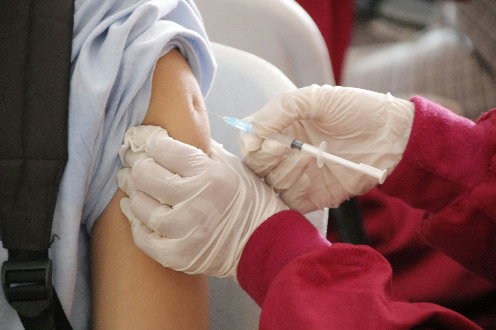

Exercícios Diários
Praticar ao menos 30 minutos diários de caminhada ou esportes melhora a circulação sanguínea e reduz o risco de doenças cardiovasculares.
Iniciativa dedicada a garantir uma vida saudável e promover o bem-estar da comunidade local em todas as idades (ODS 3 da ONU).
Conhecer Hábitos SaudáveisA ODS 3 busca assegurar a prevenção de doenças, acesso a hábitos saudáveis e suporte integral à saúde física e mental na nossa região.



Praticar ao menos 30 minutos diários de caminhada ou esportes melhora a circulação sanguínea e reduz o risco de doenças cardiovasculares.
Priorize momentos de pausa e controle do estresse. A saúde mental é tão vital quanto a física para a longevidade.
Mantenha sua carteira de vacinação atualizada. A imunização protege você e toda a comunidade contra surtos e epidemias.
Consulte profissionais de saúde periodicamente. O diagnóstico precoce é o meio mais eficaz de combate a diversas enfermidades.